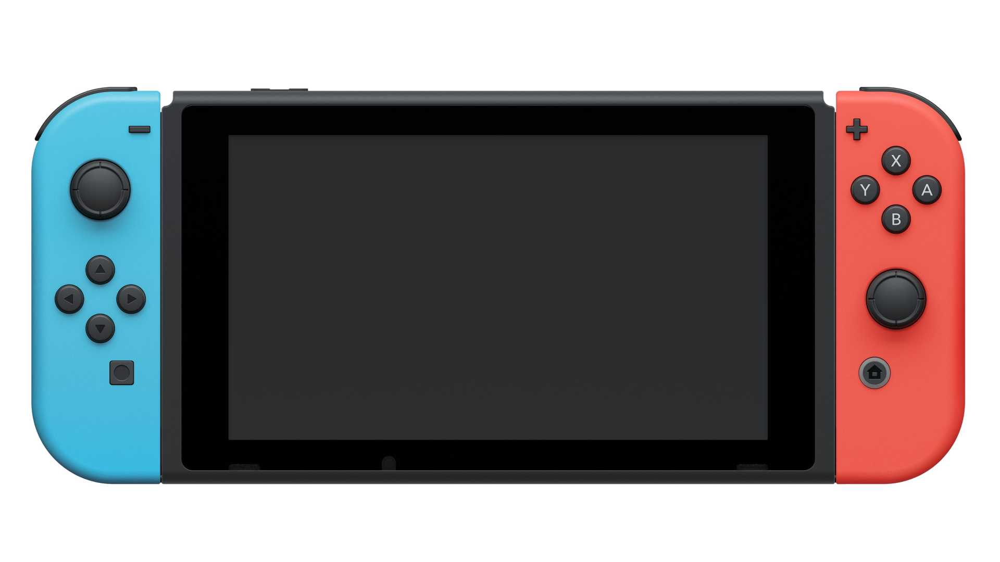

Nintendo Switch
Nintendo Switch is a console that can transform to suit your situation.
Play the way you want, anytime and anywhere.
Nintendo Switch is a console that can transform to suit your situation.
Play the way you want, anytime and anywhere.
Each of you can enjoy all the benefits of a Nintendo Switch Online + Expansion Pack for only about $10 per person a year—share the fun and share the savings!
Free Shipping at all stores!
1. Hybrid Console: • Handheld Mode: Play games on the go with the built-in screen and attached Joy-Con controllers. • Tabletop Mode: Share the screen with friends or family by using the stand to prop up the Switch and playing with the Joy-Con controllers.
2. Joy-Con Controllers: • Versatile Controllers: The Joy-Con controllers can be used individually or together, and can be attached to the main Switch unit or used separately. • Movement Controls: The Joy-Cons feature motion controls, allowing for intuitive and immersive gameplay. • Remapping: You can remap the buttons on your Joy-Cons for a more personalized gaming experience.
3. Connectivity: • Bluetooth Audio: The Switch supports Bluetooth connectivity, allowing you to connect wireless headphones, speakers, or earbuds. • Online Services: Nintendo Switch Online offers cloud save, online multiplayer, and access to a library of classic Nintendo games. • User Data Transfer: You can transfer user profiles and save data to a new console.